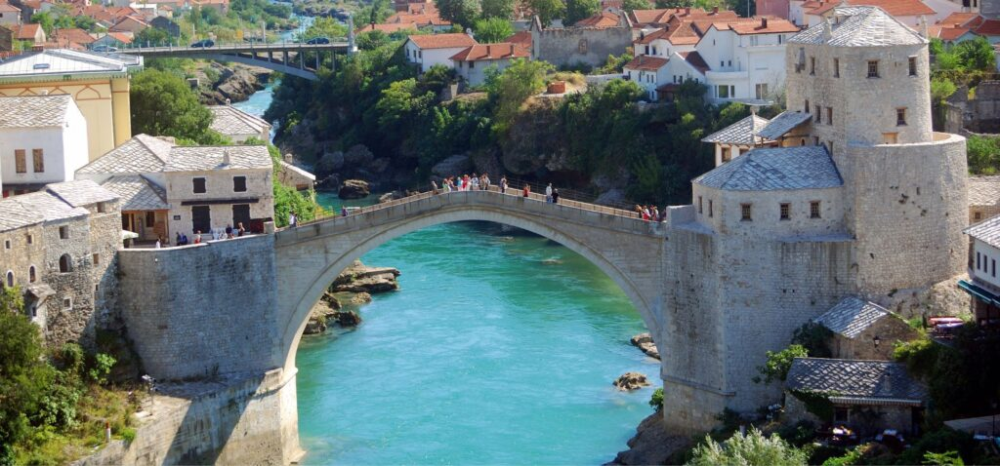
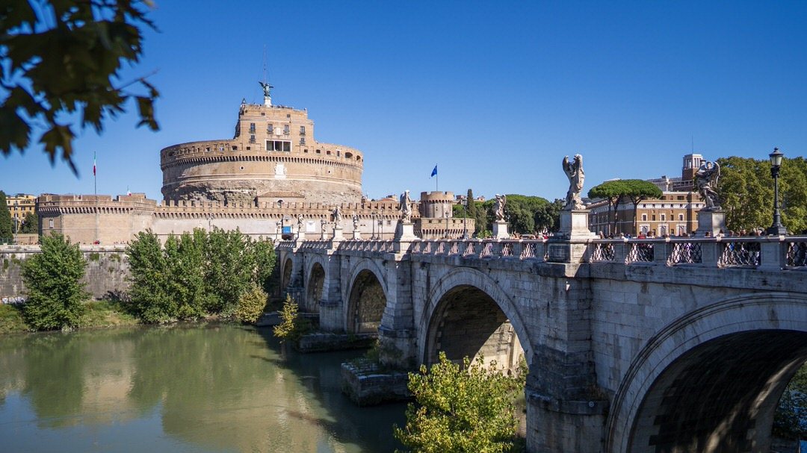
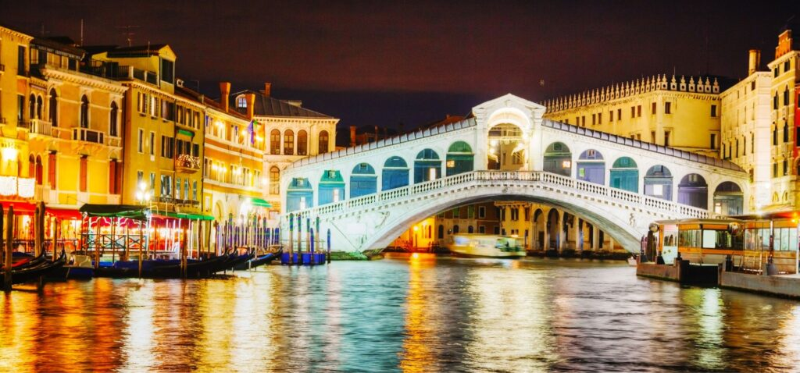

Stary Most w Mostarze – symbol pojednania
Kamienny Stari Most spina wysokie brzegi rzeki Neretwy – błękitnej wstęgi malowniczo
przecinającej miasteczko Mostar w Bośni i Hercegowinie. Przeprawa o przepięknym łukowatym kształcie
została zbudowana za czasów osmańskich (w latach 1557-1565), na zlecenie sułtana Sulejmana.
Miała ona nie tylko zastąpić istniejący tu wcześniej drewniany most, ale także połączyć dwie dwie
części miasta, nie tylko dosłownie, ale również symbolicznie – Wschód z Zachodem, chrześcijan z
wyznawcami Islamu, prawosławnych Serbów z katolickimi Chorwatami. I tak się stało. Zbudowany z bloków
lokalnego białego kamienia tenelija most cieszył oko mieszkańców przez niemal 400 lat i przetrwał dwie
wojny światowe. 
Niestety podczas bośniackiej wojny domowej przeprawa została wysadzona przez chorwacką armię. W 1995 roku,
tuż po wojnie, lokalne władze przy współpracy z UNESCO zdecydowały o odbudowie mostu. Wykorzystano ten sam
projekt i ten sam wapień, a łukowaty most również dziś ma przypominać o wadze pokoju na bośniackiej ziemi.
W 2004 roku ponownie otwarto most, a w 2005 roku wpisano go na listę Światowego Dziedzictwa UNESCO.
Ciekawostką Starego Mostu jest też wielowiekowa tradycja, którą już w XVII wieku opisał pewien turecki podróżnik.
Musicie bowiem wiedzieć, że młodzi mężczyźni z Mostaru skaczą z mostu do rzeki, by udowodnić swą odwagę i męskość.
Co roku odbywają się też zawody w skokach do wody.
Most Karola – najstarszy most w Pradze
Wpisany na listę UNESCO Most Karola w Pradze, to bez wątpienia jeden z najbardziej

rozpoznawalnych zabytków Europy.
Średniowieczny kamienny most łączy praskie Stare Miasto z położoną na lewym brzegu Wełtawy dzielnicą Mała Strana.
Budowę rozpoczęto w 1357 roku za panowania Karola VI (stąd jego dzisiejsza nazwa), a zaprawę konstrukcji wzmocniły
białka jajek. Z mostu zrzucono patrona Czech – św. Jana Nepomucena, a z samą przeprawą wiążą się liczne legendy.
Most Anioła w Rzymie
Jeśli chodzi o zabytkowe mosty w Europie, to rzymski Ponte Sant’Angelo z pewnością należy do tych najpiękniejszych!
Jego historia sięga panowania cesarza Hadriana, który w 133 roku zlecił budowę nowej przeprawy przez Tyber.
Powód był prosty – należało połączyć centrum ówczesnego Rzymu z budowanym właśnie mauzoleum cesarza.
Trzyprzęsłowy most zbudowano z włoskiego peperynu i obłożono trawertynem pozyskiwanym w okolicy Tivoli.
Pięknie wykończony, potężny, zakończony specjalnymi rampami most (wtedy zwany Mostem Eliusza) szybko stał się wizytówką Wiecznego Miasta.

Most służył mieszkańcom i pielgrzymom przez ponad tysiąclecie. Jednak w Roku Jubileuszowym 1450 doszło do tragedii. Balustrady mostu nie
wytrzymały naporu tłumu pielgrzymów zmierzających do Watykanu. W wypadku zginęły 172 osoby i dla wszystkich stało się jasne, że najwspanialszy z rzymskich mostów wymaga renowacji.
Most odbudowano zachowując jego styl, a w 1525 roku stanęły na nim rzeźby przedstawiające św. Piotra i Pawła oraz dwunastu patriarchów.
W XVI wieku do akcji wkroczył jednak papież Klemens VII, który nakazał usunięcie posągów i zastąpienie ich figurami aniołów, wykonanych wg projektu Berniniego. Ustawione po dwóch
stronach mostu anioły trzymają symbole związane z Drogą Krzyżową m.in. koronę cierniową, bicz czy chustę św Weroniki. Miejska legenda mówi, że to właśnie przez most wiedzie droga
do królestwa niebieskiego! Co ciekawe, rzeźby stojące na moście to kopie. Cenne oryginały można podziwiać w Bazylice Sant’Andrea delle Fratte (czyli “Św. Andrzeja z Zarośli”).
Być może to właśnie posągom aniołów most zawdzięcza swoją nazwę. Jednak według jednej z rzymskich legend papież Grzegorz Wielki miał ujrzeć anioła na szczycie antycznego
mauzoleum Hadriana. Archanioł Michał miał schować miecz do pochwy, tym samym zapowiadając koniec zarazy nękającej miasto w VI wieku. Wtedy to Mauzoleum Hadriana przemianowano
na Zamek św. Anioła, a wiodący do niego most – na Ponte Sant’Angelo.
Pod koniec XIX wieku brzegi Tybru podniesiono, a most zyskał dwa nowe przęsła. Usunięto rampy, a nowe elementy wzniesiono przy zachowaniu oryginalnego stylu.
Dzięki temu potężny Most św. Anioła do dziś zachwyca turystów i mieszkańców Rzymu.
Ponte di Rialto – najstarszy most w Wenecji
Most Rialto nad Canale Grande to prawdziwy symbol Miasta na Wodzie. Miejsce, w którym się znajduje, już w Średniowieczu stanowiło strategiczny punkt miasta.
Kolejne budowane tu drewniane przeprawy nie wytrzymywały ciężaru sklepików, towarów i przechodniów, zatem zdecydowano o budowie przeprawy murowanej.
Rozpisano konkurs, który wygrał projekt weneckiego architekta Antonio de la Ponte. Ponoć przy projekcie inspirował się on sylwetką drewnianego mostu, który
stał nad kanałem w 1255 roku. Budowę przeprawy zakończono w 1551 roku i aż do 1854 roku była ona jedynym mostem nad Canale Grande.
Ponte di Rialto ma tylko jeden łuk, wsparty z każdej strony na 6000 drewnianych pali!
Na most wiodą 3 rzędy schodów, a jego środkowa część zabudowana jest sklepikami z pamiątkami.
Tower of London
Londyński Tower Bridge to jeden z najsłynniejszych mostów świata. Jego sylwetka w sposób doskonały symbolizuje Londyn – nie ma tu mowy o pomyłce,
choć sam most czasem bywa mylnie nazywany “London Bridge”.

Choć Tower Bridge wygląda jakby stał w Londynie od wieków, to konstrukcja wiktoriańska.
W 1872 roku, gdy Parlament rozpisał konkurs na projekt nowej, niezbędnej miastu przeprawy, postawiono jeden warunek – nowy most ma harmonizować z
bryłą twierdzy Tower. I tak w 1894 roku ukończono Tower Bridge – arcydzieło ówczesnej architektury.
Nie wszyscy wiedzą, że Tower Bridge to most zwodzony. Jego środkowa część unosi się tak, by wpuścić do miasta statki oceaniczne,
sięgające nawet 40 metrów nad poziom wody